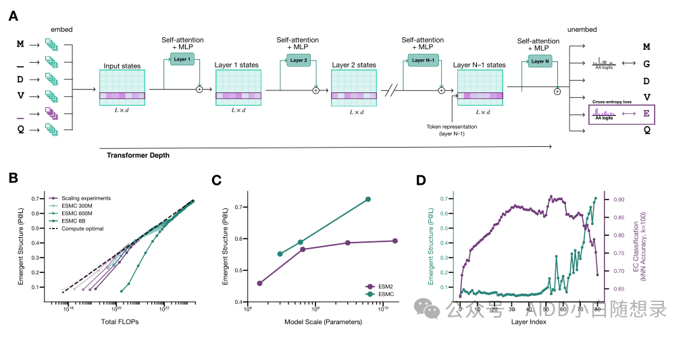
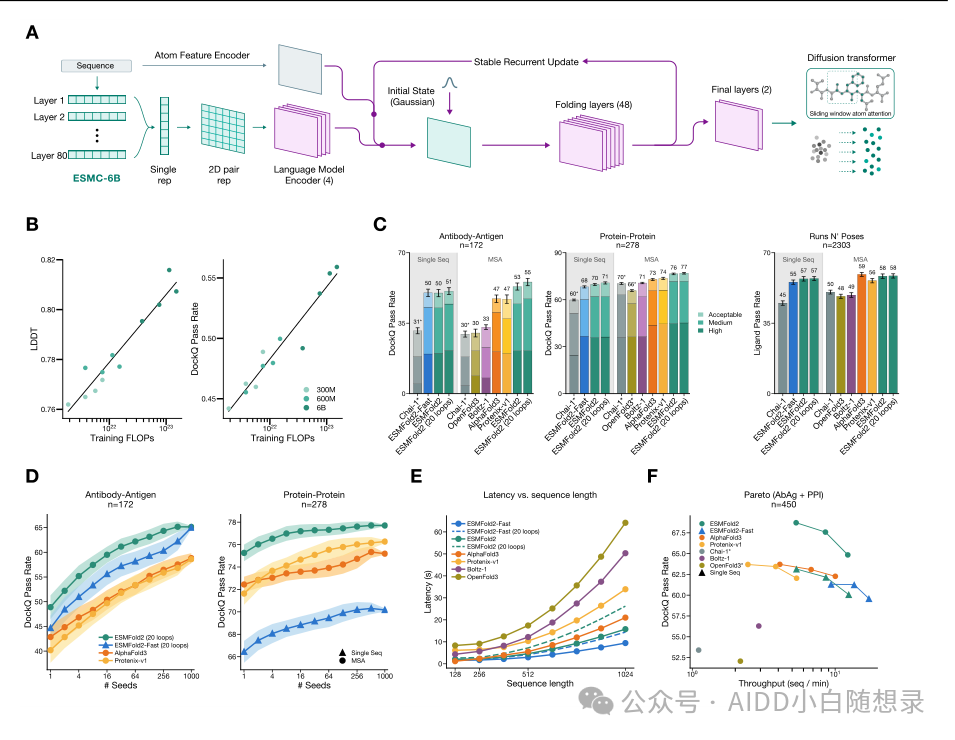
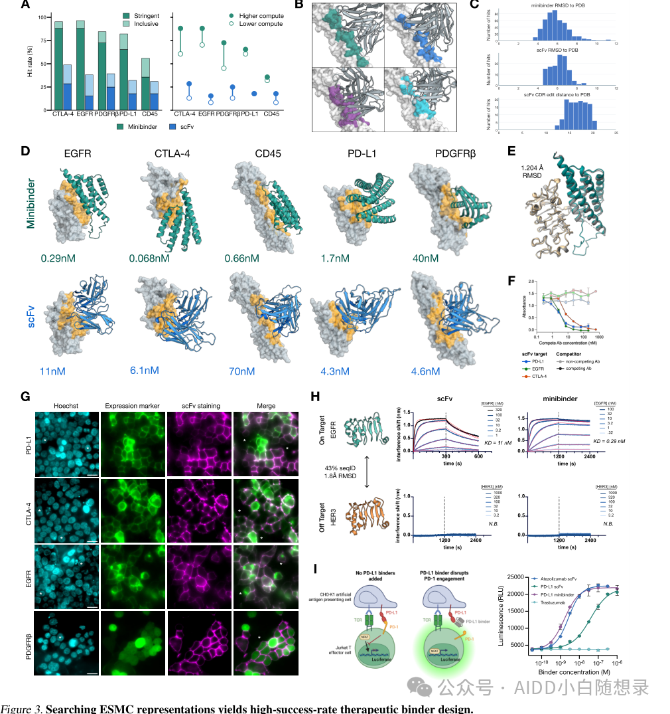
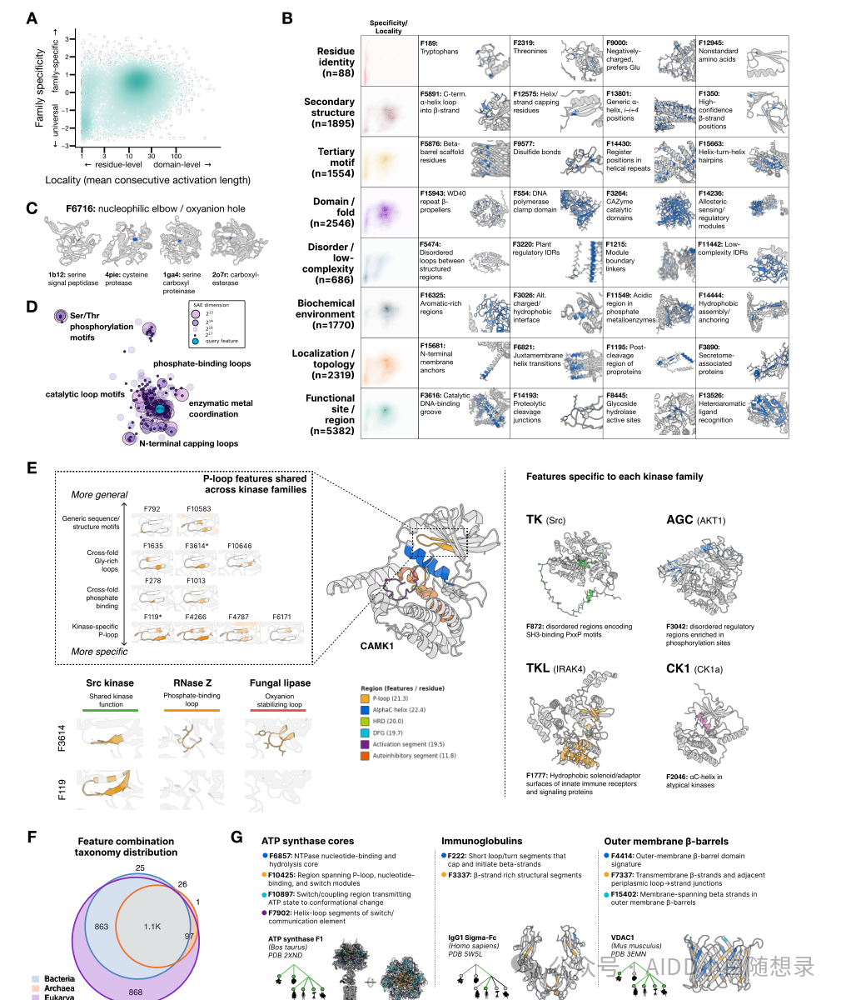
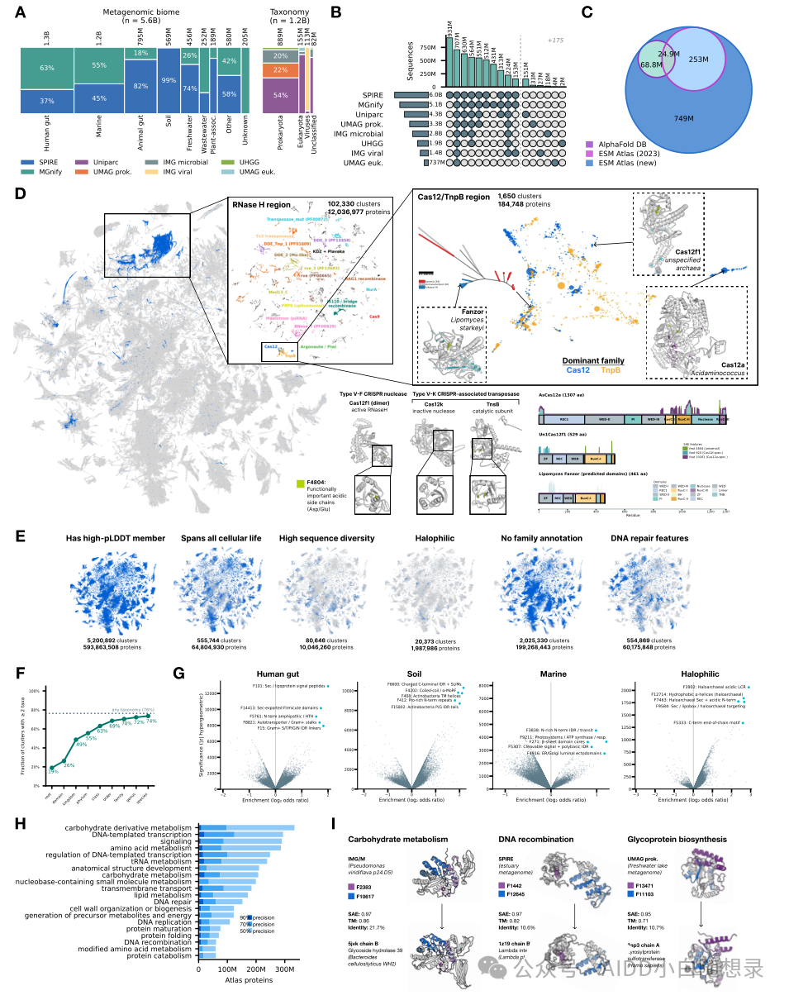

Zuckerberg's Protein World Model: Has ESMFold2 Crossed AI4Protein's Emergence Point?
Contents
- 01 — From ESMFold1 to ESMFold2: the language-model route catches up on complexes
- 02 — Against AlphaFold3, Boltz and Chai: what is different about ESMFold2?
- 03 — Against RFdiffusion and BindCraft: less a generator, more a scorer and prior inside a search engine
- 04 — Sparse autoencoders: does the model really hold a dictionary of protein concepts?
- 05 — ESM Atlas: putting protein dark matter into one coordinate system
- 06 — Where to stay calm
- 07 — Closing
Paper: Language Modeling Materializes a World Model of Protein Biology "If protein language models keep scaling, what actually happens?"
The AI world has been taught the scaling lesson many times over: more parameters, more data, more compute, and the loss falls along some predictable curve. Then, past a certain scale, abilities that seemed like they should not exist yet suddenly become usable.
So is there an equivalent law inside protein language models? Starting from predicting amino-acid tokens, does a model eventually emerge with an internal understanding of protein structure, function, interactions and even the design space? That is the question this new paper from Biohub and EvolutionaryScale most wants to answer.
The title is ambitious: Language Modeling Materializes a World Model of Protein Biology. It is a claim that deserves suspicion, but reading through, the authors are not trying to show that a model gained a few points. They are trying to connect a whole system: from the protein language model ESMC to the structure predictor ESMFold2, from experimental validation of therapeutic binder design to sparse autoencoders that dissect the model's internal features, and finally out to an ESM Atlas covering 6.8 billion protein sequences and 1.1 billion predicted structures.
In other words, the paper is not really about a single model. It is about a chain of capabilities, and about whether the scaling law of protein language models is pushing them through some emergence point, from sequence statistics learners into a unified stage of structure prediction, complex modelling, binder design and world-scale mapping.
So let us go from ESMFold1 to ESMFold2, and put it on the same page as AlphaFold3, Boltz, Chai, RFdiffusion and BindCraft to see what is actually distinctive.
01 — From ESMFold1 to ESMFold2: the language-model route catches up on complexes
ESMFold1's selling point was clear: no MSA, just the ESM2 protein language model representation, folding a structure quickly from a single sequence.
That route differs fundamentally from the AlphaFold family. AlphaFold2's strength comes largely from the evolutionary covariation in MSAs; ESMFold1 compresses those evolutionary statistics into language model parameters ahead of time, so inference needs no homology search, only folding on top of ESM2 representations.
The advantages are speed, simplicity and better behaviour on orphan proteins and designed sequences. The weakness was equally clear: ESMFold1 was good at single-chain prediction and was not the main tool for complex biomolecular interactions, especially antibody–antigen, protein–protein interfaces and protein–ligand tasks.
ESMFold2 is positioned as systematic homework on exactly that weakness.
It no longer only predicts monomer structure from a language model representation; it wires ESMC representations into an all-atom folding architecture aimed at complex interactions. Three changes matter most.
First, the backbone moves from ESM2 to ESMC, with 300M, 600M and 6B parameter versions and training data expanded from roughly 50 million sequences in the ESM2 era to about 2.8 billion, including large amounts of metagenomic sequence. It has read not only the familiar faces in classic databases but something closer to the real distribution of proteins in nature.
Second, ESMFold2 explicitly builds and iteratively updates a pair representation. It aggregates the layer representations of a frozen ESMC-6B, projects them into two-dimensional pair space, and updates them repeatedly with recurrent folding layers. Pair representations matter because a structure is not a property of individual residues; it is the organization of residue–residue, chain–chain and atom–atom relationships.
Third, ESMFold2 generates atomic coordinates with a diffusion transformer, which brings it closer to the current all-atom structure prediction paradigm and lets it handle more complex molecular interactions.

Figure 1 is really the logical starting point of the paper. As pretraining compute increases, the structural and functional information in ESMC representations keeps improving, following a near log-linear scaling trend.
That sentence matters. It means scale does not just make the model better at guessing amino acids; it makes the model better at capturing folding, function and evolutionary constraints. A falling MLM loss starts to cash out as a stronger biological representation.
Reading the ESM line as one evolutionary ladder makes this clearer. In the ESM1/ESM2 stage, contact, fold and function information begins to appear in the representations. With ESMFold1, those representations are strong enough to support single-chain structure prediction. With ESMC and ESMFold2, the authors try to show they are strong enough for complex prediction, antibody–antigen folding and binder search.
I prefer to read ESMFold2 as a downstream cashing-in of the protein language model scaling law. It is not a structure prediction miracle trained from scratch; it is a set of new capabilities released by plugging a stronger ESMC representation into pair representations, recurrent folding layers and a diffusion head.
That is also the generational difference from ESMFold1. ESMFold1 proved that language model representations can fold proteins; ESMFold2 tries to prove that they can support complex interaction prediction and enter a design search loop. In a sense, that is a waypoint in moving protein foundation models from representation emergence toward capability emergence.
02 — Against AlphaFold3, Boltz and Chai: what is different about ESMFold2?
On tasks alone, ESMFold2 sits easily inside the competition between all-atom complex predictors such as AlphaFold3, Boltz-1/2, Chai-1 and Protenix. They all answer the same question: given biomolecular sequences and context, predict the complex structure.
But ESMFold2 takes a different route.
AlphaFold3, Boltz and Chai are closer to an explicit structural modelling route: they are organized around MSAs, templates, pair representations and diffusion modules, learning a mapping from inputs to complex coordinates directly. Their strength is a complete structural modelling system, especially suited to multi-molecular complexes, ligands and nucleic acids.
ESMFold2 is closer to a language-model-representation-first route: learn a general protein representation from massive sequence data with ESMC, then attach that representation to a structure prediction trunk and a diffusion head. It gives up the earlier "no MSA" posture and the paper offers an MSA-conditioned mode, but the selling point is that even in a single-sequence setting it reaches strong complex prediction performance.

The numbers are direct. With single-sequence input, ESMFold2 reaches a 50% ± 2% DockQ pass rate on FoldBench antibody–antigen, 70% ± 1% on protein–protein interfaces and 57% ± 1% on protein–ligand tasks. With MSA, antibody–antigen and protein–protein pass rates rise to 53% ± 2% and 76% ± 1%.
Speed is more interesting. With 10 loops and 200 diffusion steps, ESMFold2 predicts a 1024-residue structure in 15.8 seconds; ESMFold2-Fast needs 9.4 seconds. The paper stresses that both sit at the upper-right of the accuracy–throughput Pareto frontier.
That matters for AIDD. If structure prediction is only accurate, it is an analysis tool. If it is accurate and fast, it becomes a primitive inside the design loop. ESMFold2's distinctiveness is exactly there: rather than chasing the highest accuracy alone, it combines single-sequence representation, complex folding and high-throughput inference to serve binder search.
03 — Against RFdiffusion and BindCraft: less a generator, more a scorer and prior inside a search engine
Talk about protein design and RFdiffusion and BindCraft come to mind.
RFdiffusion generates a backbone first, then inverse-folds a sequence with tools such as ProteinMPNN; it is essentially a structure generator, good at generating new backbones under constraints, especially motif scaffolding and binder backbone generation.
BindCraft takes another route: treat AlphaFold-Multimer as a differentiable scoring function and back-propagate through sequence space by hallucination. It does not generate backbones and filter; it lets the structure predictor take part in sequence–structure co-design.
The ESMC + ESMFold2 binder design route sits between the two but is not identical to either. It is closer to a system of language model prior + structure prediction scoring + large-scale search: ESMC makes candidate sequences look like proteins nature could fold and express, ESMFold2 judges whether a candidate forms a sensible interface with the target, and metrics such as ipTM and distograms rank the flood of candidates so that a few reach the bench.
So ESMFold2 here is not RFdiffusion generating structures from nothing, nor a fully differentiable hallucination optimisation of the BindCraft kind. It turns a folding model into a discriminator and structural prior for high-throughput design search.

The authors designed minibinders and single-chain antibody fragments (scFvs) against five targets — PDGFRβ, EGFR, PD-L1, CD45 and CTLA-4 — and validated them with BLI, cell staining, competition ELISA, PD-L1/PD-1 functional blocking assays and cryo-EM.
A few results deserve pulling out.
First, adding inference-time compute does raise experimental hit rates. In the harder antibody design setting the hit rate went from 12.1% to 21.0%. The scale and quality of digital experiments can be converted into wet-lab hit rate.
Second, several designs reach nanomolar affinity: an EGFR minibinder around 0.29 nM, a CTLA-4 minibinder around 0.068 nM, a PD-L1 minibinder around 1.7 nM. For early de novo binder design, that is not weak binding.
Third, the cryo-EM structure of the EGFR–minibinder complex is about 1.204 Å RMSD from the computational model, meaning that at least in this case the designed binding conformation was realized experimentally.
The most useful takeaway is not that the model succeeds in one shot. It is that ESMFold2's efficiency makes large-scale structural screening practical, compressing expensive experimental exploration into a loop of many in-silico searches and a few experimental checks.
04 — Sparse autoencoders: does the model really hold a dictionary of protein concepts?
The usual objection to protein foundation models is that they are just very large correlation machines, and that talk of a world model is a nice narrative. This paper does not answer only with benchmarks; it dissects ESMC's latent space with a sparse autoencoder (SAE). Roughly, an SAE breaks a high-dimensional neural representation into sparser, more interpretable features, looking for the "concept directions" the model reuses internally.

Figure 4 shows the hierarchical organization of those features, from local amino-acid properties and secondary structure through tertiary motifs to domain and fold level, low-complexity regions, cellular localization and functional sites.
The paper shows some representative features: catalytic motifs, disulfide bonds, beta-barrel scaffolds, DNA polymerase clamp domains, membrane helix transitions, glycoside hydrolase active sites. The model's interior is not just fuzzy sequence similarity; directions corresponding to biochemistry, structural biology and protein function appear inside it.
The implication is that a foundation model may be more than an embedding extractor. If SAE features correspond stably to structural and functional concepts, a black-box scorer can become a tool for mining mechanistic hints, retrieving remote functional homologues, or helping annotate targets.
Of course, these "concepts" are still statistical structure inside model space, not a complete biophysical mechanism. It is more of an entry point: a chance to observe how the model organizes the protein world internally.
05 — ESM Atlas: putting protein dark matter into one coordinate system
The paper ends by pulling the view out to a very large scale.
Using the ESMC and ESMFold2 representation system, the authors built the ESM Atlas, covering 6.8 billion protein sequences and predicting 1.1 billion atomic-resolution structures. The scale is striking: not annotation for a handful of model organisms, but an attempt to place a large part of the protein space that life on Earth has explored into a single coordinate system.

The most striking visual is the large UMAP map. Each point is not just a sequence but a projection of protein family, structure, function and environmental source into the model's representation space. The authors go on to show the RNase H region, the Cas12/TnpB region, and connections between uncharacterized metagenomic proteins and known functional features.
The point is that many sequences have no clear annotation in traditional databases, and some are barely similar to anything known. But if they activate function-related features in model space, they can be pulled back into an interpretable biological context.
ESM Atlas is, in other words, a map of protein dark matter. It cannot replace experiments, but it can tell you which unknown proteins might be worth a look, where remote links between families might exist, and which structural or functional themes recur across environments.
This is also where the ESM family differs from many pure structure predictors. The dominant narrative of AlphaFold-class models is: given an object, predict its structure. The dominant narrative of ESM Atlas is closer to: given the whole natural protein space, organize structure–function relationships.
06 — Where to stay calm
The results are impressive, but I would keep at least three boundaries in mind.
First, ESMFold2's benchmarks are strong, but success at structure prediction does not mean every downstream function is reliable. Dynamics, conformational change, membrane environments, post-translational modifications and intracellular concentration effects are not fully covered by a single static structure model.
Second, binder design here has experimental validation, which is one of the paper's weightiest contributions. But those results come from the authors' chosen targets, pipeline and selection strategy. Transferred to harder targets, tighter developability constraints or a stricter in vivo setting, the hit rates may not carry over.
Third, "world model" is an attractive phrase, but I read it as: the model learned a representation system usable for predicting, designing and organizing protein biology. It is not a digital life scientist holding complete causal mechanisms. It can suggest leads and accelerate search, but experiments and mechanistic work still close the loop.
Seen this way, ESMFold2's value is not replacing AlphaFold3, Boltz, Chai, RFdiffusion or BindCraft. It completes a distinctive piece of the puzzle: using large-scale protein language model representations to connect high-throughput complex folding, therapeutic binder search, model interpretability and a life-scale map.
07 — Closing
Looking back, the most interesting thing about ESMFold2 is not that it is more accurate than ESMFold1, nor that it beats someone on a benchmark. It pushes the ESM language-model route from single-chain structure prediction into complex interaction prediction and a closed experimental design loop.
If ESMFold1 showed that MSAs are not the only door into structure prediction, ESMFold2 goes further: when the language model representation is strong enough, the pair representation efficient enough and diffusion folding fast enough, it can become a primitive inside the AIDD design loop.
Next to RFdiffusion and BindCraft, the distinctiveness of ESMC + ESMFold2 is clear. It neither generates alone nor optimises by hallucination alone; it tries to turn the protein prior learned from natural sequence space into a design platform that is searchable, interpretable and experimentally testable.
Perhaps in a few years this paper will matter less for how fast or accurate ESMFold2 is, and more for pushing the protein language model scaling law into something more concrete: scale produces representations, and representations can be converted into structure, design, explanation and discovery.
The end of protein language models may not be reading sequences. It may be learning to read what the vast space of life is hiding.
Originally published in Chinese on WeChat, June 1, 2026, as 扎克伯格的蛋白世界模型： ESMFold2是否跨过了 AI4Protein 的“涌现点”？.
English version by Yitian Xiao; figures carried over from the Chinese original. Corrections are welcome via an issue.